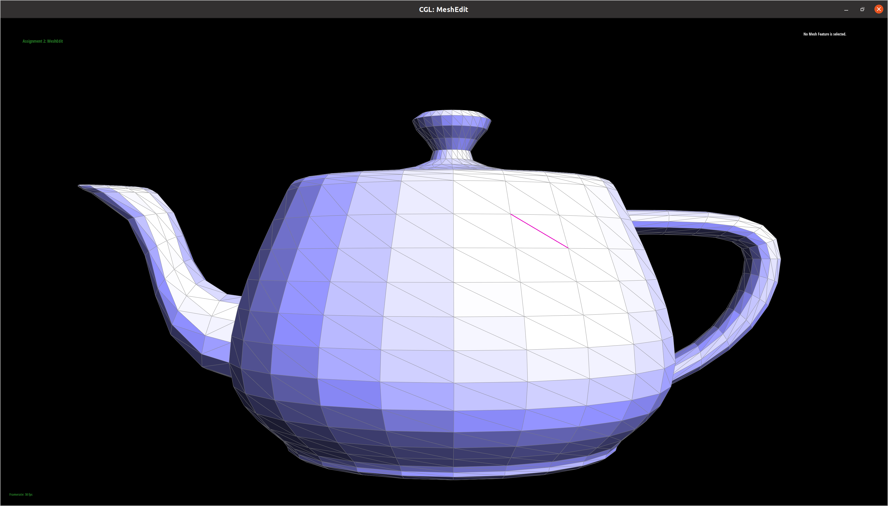

Overview
Give a high-level overview of what you implemented in this project. Think about what you've built as a whole. Share your thoughts on what interesting things you've learned from completing the project.
The website is hosted at https://cal-cs184-student.github.io/sp22-project-webpages-anikethjr/.Section I: Bezier Curves and Surfaces
Part 1: Bezier curves with 1D de Casteljau subdivision
De Casteljau’s algorithm is a recursive algorithm that can evaluate Bezier curves using linear interpolation. Essentially, it takes in n + 1 control points and evaulates a Bezier curve of degree n. The way it works is the following:
- First, for every edge between adjacent control points, we need to find a new control point using linear interpolation.
- Next, connect the newly created adjacent points to get a set of new edges
- Finally, repeat the process until only one point is generated.
In terms of how we implemented this, we implemented the evaluateStep function which took in a vector of control points. We added to our returned lerp'd points (1.0 - t) * points[i] + t * points[i + 1] for each i in the length of control points passed in - 1. evaluateStep is run multiple times until there is only one point.

|

|

|

|

|
|
|
|

|
Part 2: Bezier surfaces with separable 1D de Casteljau subdivision
In order to extend de Casteljau algorithm to Bezier surfaces, we can apply it multiple times to find the position on the Bezier surface for some input. More in depth, if we are given an NxN set of 3D control points, we can evaluate the points on the Bezier curve made by every row in the input parametrized by u. In turn, these points can be used as an input to de Casteljau's algorthim to find point parametrized by v. Our final output point is (u, v).
Implementation wise, we can use the 1D implementation of de Casteljau’s Algorithm for every row in the N x N control points - this represents all points parameterized by u. As mentioned/implied above, we call the 1D implementation on these resulting points and parameter v to get the final point (u, v). How does the 1D implmentation of de Casteljau's algorithm work? It essentailly calls evaluateStep() N - 1 times to return a interpolated vector representing a point on the Bezier curve.
Section II: Sampling
Part 3: Average normals for half-edge meshes
Part 4: Half-edge flip
We mapped out the pointer assignments that need to be performed in order to flip an edge on a piece of paper and then coded them up. By doing this, we did not face any major debugging challenges. The implementation tip on assigning all relevant pointers, even if redundant, was also very helpful. We use the notations from the figure below:

|
To get pointers to the relevant half-edges, we perform the following operations (cur_edge is the edge to be flipped):
- The half-edge pointed to by cur_edge = cur_halfedge = cur_edge->halfedge()
- The twin of half-edge pointed to by cur_edge = twin = cur_halfedge->twin()
- The next half-edge of the triangle containing the half-edge pointed to by cur_edge = next = cur_halfedge->next()
- The half-edge from c to a = ca = next
- The half-edge from d to c = dc = twin->next()->next()
- The half-edge from a to b = ab = next->next()
- The half-edge from b to d = bd = twin->next()
The pointers to the vertices can be obtained as:
- a = next->next()->vertex();
- b = cur_halfedge->vertex();
- c = twin->vertex();
- d = twin->next()->next()->vertex();
Pointers to the two faces can be obtained as:
- The face containing cur_halfedge = cur_face = cur_halfedge->face()
- The face containing the twin half-edge = twin_face = twin->face()
Once we have all the necessary pointers, we begin re-assigning them. We start with fixing the half-edges pointed to by the faces:
- cur_face->halfedge() = cur_halfedge
- twin->face()->halfedge() = twin
Then, we fixed the half-edges as follows (pointers not mentioned here were left unchanged):
- cur_halfedge
- ->next() = dc
- ->twin() = twin
- ->vertex() = a
- ->edge() = cur_edge
- ->face() = cur_face
- twin
- ->next() = ab
- ->twin() = cur_halfedge
- ->vertex() = d
- ->edge() = cur_edge
- ->face() = twin_face
- ca
- ->next() = cur_halfedge
- ->face() = cur_face
- ab
- ->next() = bd
- ->face() = twin_face
- bd
- ->next() = twin
- ->face() = twin_face
- dc
- ->next() = ca
- ->face() = cur_face
Finally, we fixed the half-edges pointed to by the vertices:
- a->halfedge() = cur_halfedge
- d->halfedge() = twin
- b->halfedge() = bd
- c->halfedge() = ca

|

|
|
|
|
Part 5: Half-edge split
Again, we mapped out the pointer assignments that need to be performed in order to split an edge on a piece of paper and then coded them up. We did not have to debug our code extensively because of this methodical approach. The only hiccup we had was due to our unfamiliarity with iterators. Specifically, we did not know how to create new objects using them. But the provided primer on iterators and their similarity to pointers was helpful in showing us how to allocate new objects. We use the notations from the figure below:
|
|
Similar to the flip operation, we get pointers to the relevant half-edges by performing the following operations (cur_edge is the edge to be split):
- The half-edge pointed to by cur_edge = cur_halfedge = cur_edge->halfedge()
- The twin of half-edge pointed to by cur_edge = twin = cur_halfedge->twin()
- The next half-edge of the triangle containing the half-edge pointed to by cur_edge = next = cur_halfedge->next()
- The half-edge from c to a = ca = next
- The half-edge from d to c = dc = twin->next()->next()
- The half-edge from a to b = ab = next->next()
- The half-edge from b to d = bd = twin->next()
The pointers to the existing vertices can be obtained as:
- a = next->next()->vertex();
- b = cur_halfedge->vertex();
- c = twin->vertex();
- d = twin->next()->next()->vertex();
Pointers to the two existing faces can be obtained as:
- The face containing cur_halfedge = cur_face = cur_halfedge->face()
- The face containing the twin half-edge = twin_face = twin->face()
Then, we create the new vertex m as follows (in our implementation cur_edge becomes the top half of the split edge and we create a new edge for the bottom half in later steps):
- m->position = (c->position + b->position) / 2.0
- m->halfedge() = cur_halfedge
We also make sure that the existing vertices point to the edges that will be unchanged since some vertices might be pointing to the edge that is being split and thus may become problematic after the split:
- a->halfedge() = ab
- b->halfedge() = bd
- c->halfedge() = ca
- d->halfedge() = dc
Next, we create the new faces - mab and dmb. We also fix the half-edges pointed to by the existing faces:
- mab->halfedge() = ab
- dmb->halfedge() = bd
- cur_face->halfedge() = ca
- twin_face->halfedge() = dc
Finally, we create the new half-edges - bm, mb, am, ma, md and dm, and the new edges - AM, MD and BM. We perform the following pointer assignments to set up these new elements and also fix the existing half-edges and edges.
-
In the cur_face:
- ca->next() = am
- AM->halfedge() = am
- am->twin() = ma
- am->next() = cur_halfedge
- am->vertex() = a
- am->edge() = AM
- am->face() = cur_face
- cur_halfedge->vertex() = m
- ma->twin() = am
- ma->next() = ab
- ma->vertex() = m
- ma->edge() = AM
- ma->face() = mab
- ab->next() = bm
- ab->face() = mab
- BM->halfedge() = bm
- bm->twin() = mb
- bm->next() = ma
- bm->vertex() = b
- bm->edge() = BM
- bm->face() = mab
- twin->next() = md
- MD->halfedge() = md
- md->twin() = dm
- md->next() = dc
- md->vertex() = m
- md->edge() = MD
- md->face() = twin_face
- dm->twin() = md
- dm->next() = mb
- dm->vertex() = d
- dm->edge() = MD
- dm->face() = dmb
- mb->twin() = bm
- mb->next() = bd
- mb->vertex() = m
- mb->edge() = BM
- mb->face() = dmb
- bd->next() = dm
- bd->face() = dmb
In the new mab face:
In the twin face:
In the new dmb face:
|
|
|
|
|
|
|

|
|
|
|
|
Part 6: Loop subdivision for mesh upsampling
We performed loop subdivision in 5 main steps. The first step involved computing the new positions of all existing vertices using the loop subdivision rule:
New position of existing vertex = (1 - nu) * original_position + u * (sum of positions of original neighbours)
where n is the degree of the vertex in the original mesh and u = 3/16 if n = 3 or u = 3/(8n) otherwise.
In the next step, we compute the positions of the new vertices obtained after splitting all the edges (however, we don't split the edges themselves in this step).
Then, we split every existing edge using the previously implemented split operation. The position of the new vertex returned by a split operation is set to the new vertex position computed in the previous step. While performing this step, we need to be careful about iterating over the edges in the mesh. If we use the default iterators returned by mesh.edgesBegin() and mesh.edgesEnd() in the same loop that performs the splitting, we'll run into issues with infinite loops. Instead, we first compute a list of iterators pointing to the old edges and then iterate over this list while performing the splitting. We also need to be careful about setting the isNew parameter - this should be false for old edges and the edge BM created by the split operations (BM defined above in the section on the split operation) and true for all other edges.
Next, any new edge between an old vertex and new one is flipped.
Finally, the positions of all the vertices (old and new) are updated using the new positions computed in the previous steps.
Now, let us look at some screenshots of meshes after loop subdivision:
|
|
|
|
|
|
|
|
|
|
|
|
|
|
|
|
|
|
In general, we see that the meshes become smoother with more loop subdivisions. The sharp corners and edges become a bit more muted. This effect is quite stark for sharp corners that shrink towards the inside of the polygon. Moreover, this smoothening might not be uniform for all vertices - if the mesh is topologically equivalent to a sphere, most vertices will have degree 6 but there will be some vertices, called extraordinary points, with degree less than 6 (guaranteed to exist). Because of the loop subdivision rule, these extraordinary points will not be smoothened as much as the other vertices. Thus, although the original mesh might be symmetric, the modified mesh might be asymmetric. We see this clearly for the cube since it has few vertices - even after one subdivision, the corners are unevenly smoothened as some corners are extraordinary points:
|
|
The main problem with cube is that corners have a different degrees, leading to a high level of asymmetry when subdivided. However, if we split every face diagonal, this asymmetry is removed as every corner will then have degree 6 and will thus be evenly smoothened. Although the midpoints of the face diagonals will have degree 4, we need to note that ALL of the midpoints will have degree 4, thus retaining symmetry.
|
|
|
|
|
|
|